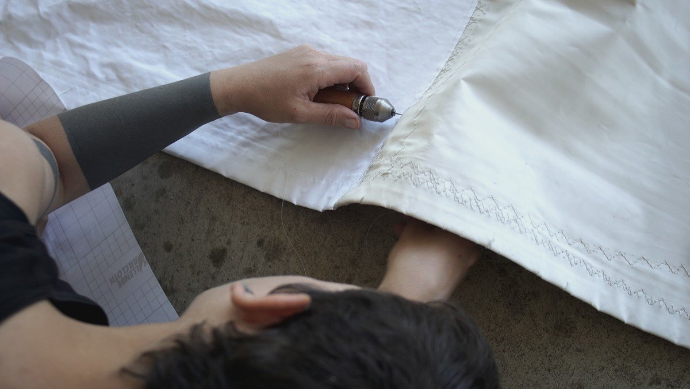
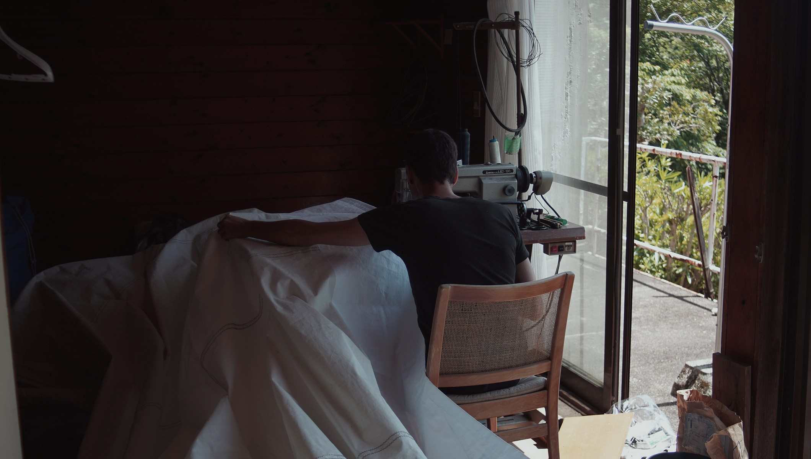
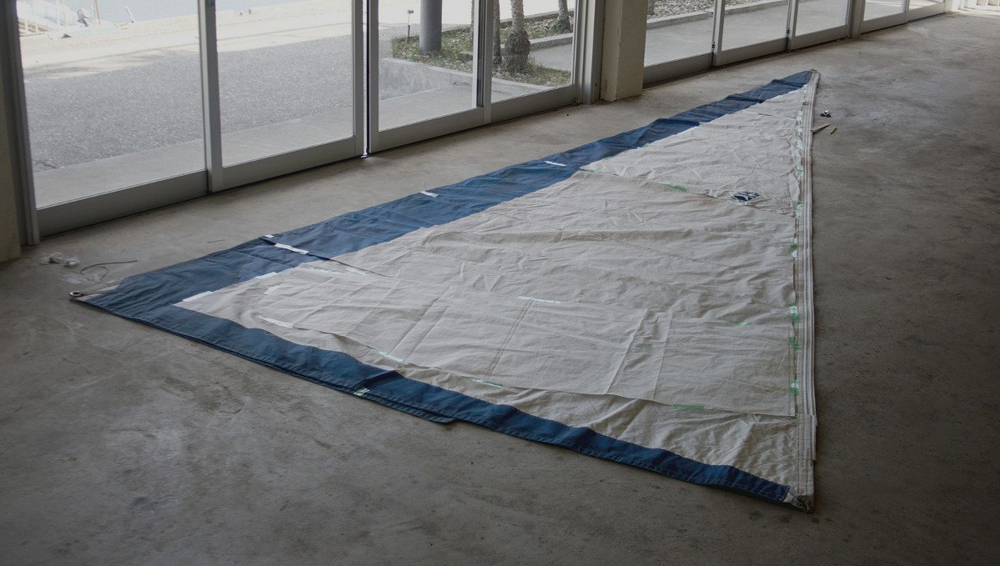
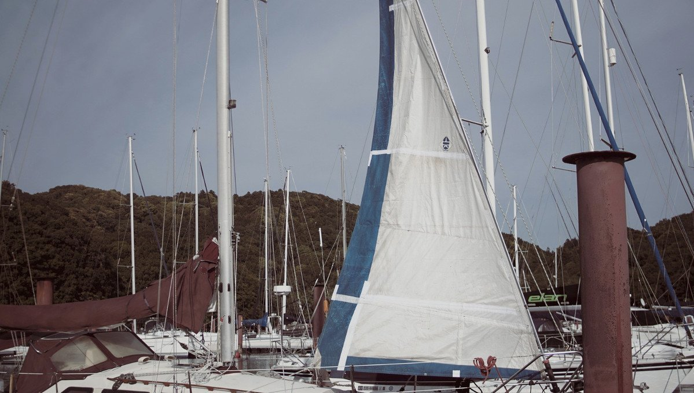

headsail
Pino's headsail is a 100% jib on a Harken roller furler. The jib has a protective dacron layer covering the leech.
20.04.16
Mie, Japan
On the passage from Ogasawara the cover of our jib started to tear. We bought material to replace it and stitched it on ourselves. Removing the old covering was a long, and tedious task.
Many ocean-sailors use sunbrella on their furling headsail, but it is a more expensive, and heavier material aloft, so we decided to keep using dacron.
Applying the new material wasn't hard, because it has a sticky-backing. We hand-stitched it at first using our sewing awl, but 3 days later we were still on panel #2 with the whole sail left to do. Our backs were aching, we feared we would not survive this project.
We asked Mr. Oka (the harbormaster) if he knew anyone with a sewing machine, and he did! We regretted not asking earlier. The sewing machine was at a loft, a 5 minute walk from the marina. The VOC(Vivre Ocean Club) used it to sew up sails for the sailing club boats.
Mr. Oka showed us how to use it, and off we went! We completed all the stitching in under an hour(!!!). All hail sewing machines—a very good invention indeed.
We had time to spare, so we worked on our Frankensail. We tried to do all of the work in the morning, because it got too hot there in the afternoon, even with all of the windows and doors open. Japanese summers are very, very hot.
Frankensail
Our friends Hiro and Kako from the sailboat Drifty gave us an old headsail that they kept at their house. The sail had a large tear at the bottom, but that was okay with us because we wanted to shorten it to turn it into a back-up sail. Our current jib looked fine, but we faced a long passage across the north pacific ocean and wanted to make sure that if something went wrong, that we'd have something else to work with.
We cut the torn panels out, and used it to double the material to make a thicker, stronger sail. We taped the layers with dacron sail repair tape first, so we knew what to affix, and where, and the machine took care of assembly. Well, we were there to feed the fabric through.
The Frankensail project was a success. We only flew it once during our passage from Japan to Victoria, raising it behind the headsail for fun. We're happy to report that our jib survived the trip.